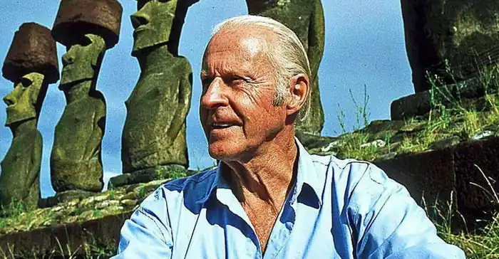
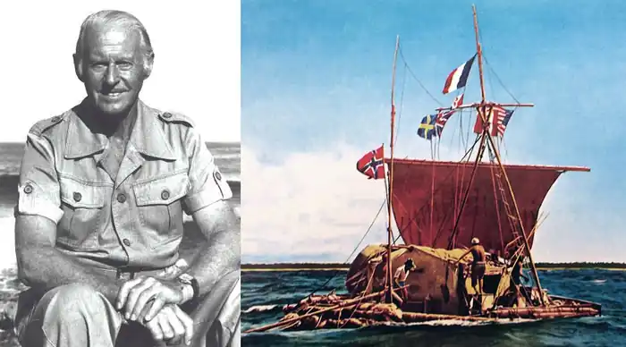

Тур Хеєрдал — норвезький етнолог та мандрівник, дослідник культури та походження різних народів світу: полінезійців, індіанців, жителів острова Пасхи, популяризатор науки, письменник. Здійснив кілька сміливих мандрівок на копіях стародавніх суден. Однак в академічних колах не припиняється дискусія щодо наукової цінності відкриттів Хеєрдала.
Хейєрдал народився 6 жовтня 1914 року в Ларвіку, Норвегія, в сім'ї майстра-пивовара Тора Хейєрдала (1869–1957) та його дружини Елісон Лінг (1873–1965). У дитинстві Хейєрдал виявляв сильний інтерес до зоології, натхненний своєю матір'ю, яка дуже цікавилася теорією еволюції Чарльза Дарвіна. У будинку свого дитинства він створив невеликий музей, головною визначною пам'яткою якого стала гадюка звичайна (Vipera berus).
Він вивчав зоологію та географію на факультеті біологічних наук в Університеті Осло. У той же час він приватно вивчав полінезійську культуру та історію, звертаючись до найбільшої на той час у світі приватної колекції книг і статей про Полінезію, що належала Б'ярне Кропелієну, багатому торговцю вином в Осло. (Пізніше ця колекція була придбана бібліотекою Університету Осло у спадкоємців Кропелієна та була приєднана до дослідницького відділу Музею Кон-Тікі.) Після семи семестрів і консультацій з експертами в Берліні професори зоології Хейєрдала, Крістін Бонневі та Яльмар Брох, розробили та спонсорували проект. Він мав відвідати окремі групи тихоокеанських островів і вивчити, як місцеві тварини знайшли туди дорогу. За день до того, як вони разом відпливли на Маркізькі острови в 1936 році, Хейєрдал одружився з Лів Кушерон-Торп (1916–1969), з якою він познайомився в Університеті Осло і яка вивчала там економіку. Йому було 22 роки, а їй 20 років. Згодом у пари народилося двоє синів: Тор-молодший і Бьорн. Шлюб закінчився розлученням незадовго до експедиції Кон-Тікі 1947 року, яку Лів допомогла організувати. Після окупації Норвегії нацистською Німеччиною з 1944 року він служив у Вільних норвезьких силах у крайній північній провінції Фінмарк. У 1949 році Хейєрдал одружився з Івонн Дедекам-Сімонсен (1924–2006). У них було три доньки: Аннет, Маріан і Хелен Елізабет. Вони розлучилися в 1969 році. Гейєрдал звинувачував їхнє розставання в тому, що він був далеко від дому, і в їхніх поглядах на виховання дітей. У своїй автобіографії він зробив висновок, що повинен узяти на себе всю провину за їхнє розставання. У 1991 році Хейєрдал одружився на Жаклін Бір (народилася в 1932 році), його третя дружина. Вони жили на Тенеріфе, Канарські острови, і брали активну участь в археологічних проектах, особливо в Тукуме, Перу та Азові до його смерті в 2002 році. Перед смертю він все ще сподівався розпочати археологічний проект на Самоа. Острів Фату-Хіва. У 1936 році, наступного дня після його одруження з Лів Кушерон Торп, молода пара вирушила на острів Фату-Хіва в південній частині Тихого океану. Номінально вони мали наукову місію, щоб дослідити поширення видів тварин між островами, але насправді вони мали намір "втекти до Південних морів" і ніколи не повертатися додому. Завдяки фінансуванню експедиції їхніми батьками вони все ж таки прибули на острів без "провізії, зброї чи радіо". Мешканці Таїті, де вони зупинилися дорогою, переконали їх взяти мачете та каструлю. Вони прибули до Фату-Хіви в долині Омоа в 1937 році і вирішили перетнути гірську внутрішню частину острова, щоб оселитися в одній із маленьких, майже покинутих долин на східній стороні острова. Там вони зробили свій критий соломою будинок на палях у долині Уї. Життя в таких примітивних умовах було важким завданням, але їм вдалося жити за рахунок землі та працювати над своїми науковими цілями, збираючи та вивчаючи зоологічні та ботанічні зразки. Вони виявили незвичайні артефакти, прислухалися до переказів усної історії тубільців і звернули увагу на переважаючі вітри та океанські течії. Саме в цій обстановці, в оточенні руїн колишньої славетної Маркизької цивілізації, Хейєрдал вперше розвинув свої теорії щодо можливості доколумбового трансокеанського контакту між доєвропейськими полінезійцями та народами та культурами Південної Америки. Незважаючи на, здавалося б, ідилічну ситуацію, вплив різноманітних тропічних хвороб та інші труднощі змусили їх повернутися до цивілізації через рік. Вони працювали разом, щоб написати звіт про свою пригоду. Події, пов'язані з його перебуванням на Маркізьких островах, більшу частину часу на Фату-Хіва, були вперше описані в його книзі På Jakt etter Paradiset ("Полювання на рай") (1938), яка була опублікована в Норвегії, але після початку Другої світової війни , так і не був перекладений і залишився здебільшого забутим. Через багато років, досягнувши популярності з іншими пригодами та книгами на інші теми, Хейєрдал опублікував нову розповідь про цю подорож під назвою Fatu Hiva ("Фату Хіва") (1974). Історія його перебування на Фату-Хіві та його подорожі до Хіваоа та Мохотані також описана в "Сьомого дня була Земля зеленою" (1996). Експедиція Кон-Тікі. У 1947 році Хейєрдал і п'ять інших шукачів пригод відпливли з Перу до островів Туамоту у Французькій Полінезії на плоту, який вони сконструювали з бальсового дерева та інших місцевих матеріалів і охрестили "Кон-Тікі". Експедицію Кон-Тікі надихнули старі звіти та малюнки, зроблені іспанськими конкістадорами про плоти інків, а також місцеві легенди та археологічні докази, які свідчать про контакт між Південною Америкою та Полінезією. 7 серпня 1947 року "Кон-Тікі" врізався в риф біля Рароїї в Туамоту після 101-денної подорожі Тихим океаном довжиною 4300 морських миль (5000 миль або 8000 км). Хейєрдал принаймні двічі ледь не потонув у дитинстві і не сприймав легко води; пізніше він казав, що в кожній його подорожі на плоту бували моменти, коли він боявся за своє життя. Книгу Хейєрдала про "Експедицію Кон-Тікі: на плоту через південні моря" перекладено 70 мовами. Документальний фільм про експедицію під назвою "Кон-Тікі" отримав премію "Оскар" у 1951 році. Театралізована версія була випущена в 2012 році, також під назвою "Кон-Тікі", і була номінована як на "Оскар" за найкращу іноземну мову на 85-й церемонії вручення премії "Оскар", так і на "Золотий глобус". Нагорода за найкращий фільм іноземною мовою на 70-й церемонії вручення премії "Золотий глобус". Це був перший випадок, коли норвезький фільм був номінований одночасно на "Оскар" і "Золотий глобус". Експедиція на острів Пасхи. У 1955–1956 роках Хейєрдал організував Норвезьку археологічну експедицію на острів Пасхи. До складу наукового персоналу експедиції входили Арне Скьолсвольд, Карлайл Сміт, Едвін Фердон, Гонсало Фігероа та Вільям Маллой. Хейєрдал і професійні археологи, які подорожували з ним, провели кілька місяців на острові Пасхи, досліджуючи кілька важливих археологічних місць. Основні моменти проекту включають експерименти з різьблення, транспортування та встановлення відомих моаї (кам'яні статуї на узбережжі острова Пасхи у вигляді людських фігур з величезними головами висотою до 20 метрів.), а також розкопки в таких видатних місцях, як Оронго та Пойке. Експедиція опублікувала два великих томи наукових звітів ("Звіти норвезької археологічної експедиції на острів Пасхи та східну частину Тихого океану"), а Хейєрдал пізніше додав третій ("Мистецтво острова Пасхи"). Популярна книга Хейєрдала на цю тему "Аку-Аку" стала ще одним міжнародним бестселером. У книзі "Острів Пасхи: Розкрита таємниця" (1989) Хейєрдал запропонував більш детальну теорію історії острова. Грунтуючись на свідченнях місцевих жителів і археологічних дослідженнях, він стверджував, що острів спочатку був колонізований Hanau eepe ("Довгі вуха") з Південної Америки, і що полінезійці Hanau momoko ("Коротковухі") прибули лише в середині 16 століття; вони, можливо, прийшли самостійно або, можливо, були імпортовані як робітники. Згідно з Хейєрдалом, між відкриттям острова адміралом Роггевеном у 1722 році та візитом Джеймса Кука в 1774 році щось сталося; тоді як Роггевен зустрів білих, індіанців і полінезійців, які жили у відносній гармонії та процвітанні, Кук зіткнувся з набагато меншим населенням, яке складалося переважно з полінезійців і жило в нестатках. Хейєрдал відзначає усну традицію про повстання "Коротковухих" проти правлячих "Довговухих". "Довгі вуха" вирили оборонний рів на східному кінці острова і засипали його підпалками. Під час повстання, як стверджував Хейєрдал, "Довговухі" запалили свій рів і відступили за нього, але "Коротковухі" знайшли спосіб обійти його, підійшли ззаду та штовхнули всіх "Довговухих", крім двох, у рів з вогнем. Цей рів був знайдений норвезькою експедицією і частково вирубаний у скелі. Шари вогню виявлено, але фрагментів тіл немає. Човни Ra і Ra II. Вже всесвітньо відомий, Тур Хеєрдал домовився з видавцями, що в кредит під книгу він здійснить подорож на очеретяному човні, збудованому з папірусу на кшталт давньоєгипетських суден від Середземного моря до Латинської Америки. Подорож мала на меті довести принаймні потенційну можливість зв'язків різних материків у минулому. Цього разу він вирішив набрати до команди людей із різних країн, дотичних до історії та культури стародавніх мореплавців. Тому серед членів міжнародного екіпажу були мексиканець, ефіоп, єгиптянин тощо. А наостанок Хеєрдал запропонував двом найбільшим супердержавам світу — СРСР та США — знайти для дослідницької та миротворчої місії ще по одному члену екіпажу. Одним із них став полярник і лікар Юрій Сенкевич. Судно було побудовано з папірусу в Єгипті за старовинними кресленнями та малюнками на пірамідах та пам'ятниках Стародавнього Єгипту. Майстри використали досвід із місць, де досі рибалять із використанням папірусних човнів: Чаду та Ефіопії. Проте недотримання майстрами старовинних схем давніх єгиптян призвело до поступового просідання корми судна під час плавання через наповнення порожнин у стеблах водою, тому експедицію було терміново припинено. Через деякий час було збудовано новий човен, на цей раз з очерету тотора з південноамериканського озера Тітікака. Човен будували майстри з південноамериканської народності Аймара, яких Тур Хеєрдал привіз для будівництва човна на узбережжя Марокко.